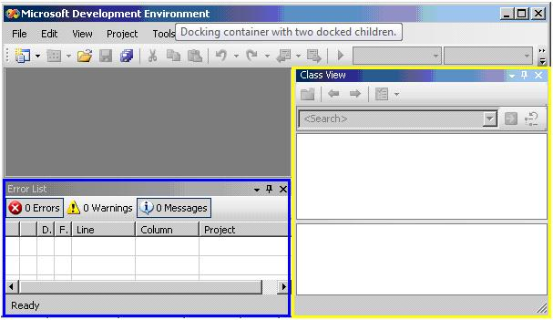

title: Dock Control Pattern
description: Describes guidelines and conventions for implementing IDockProvider, including information about properties and methods. The Dock control pattern is used to expose the dock properties of a control within a docking container.
ms.assetid: a6ea269b-632e-48ce-ac3b-edd7cc34d986
keywords:
- UI Automation,implementing dock control pattern
- UI Automation,dock control pattern
- UI Automation,IDockProvider
- IDockProvider
- implementing UI Automation dock control patterns
- dock control patterns
- control patterns,IDockProvider
- control patterns,implementing UI Automation dock
- control patterns,dock
- interfaces,IDockProvider
ms.topic: article
ms.date: 05/31/2018
Dock Control Pattern
Describes guidelines and conventions for implementing IDockProvider, including information about properties and methods. The Dock control pattern is used to expose the dock properties of a control within a docking container.
A docking container is a control that allows you to arrange child elements horizontally and vertically, relative to each other. The following image shows a docking container with two child elements. For examples of controls that implement this control pattern, see Control Types and Their Supported Control Patterns.

This topic contains the following sections.
Implementation Guidelines and Conventions
When implementing the Dock control pattern, note the following guidelines and conventions:
- IDockProvider does not expose any properties of the docking container or any properties of controls that are docked adjacent to the current control within the docking container.
- Controls are docked relative to each other based on their current z-order; the higher their z-order placement, the farther they are placed from the specified edge of the docking container.
- If the docking container is resized, any docked controls within the container will be repositioned flush to the same edge to which they were originally docked. The docked controls will also resize to fill any space within the container according to the docking behavior of their DockPosition property. For example, if DockPosition_Top is specified, the left and right sides of the control will expand to fill any available space. If DockPosition_Fill is specified, all four sides of the control will expand to fill any available space.
- On a multi-monitor system, controls should dock to the left or right side of the current monitor. If that is not possible, they should dock to the left side of the leftmost monitor or the right side of the rightmost monitor.
Required Members for IDockProvider
The following properties and methods are required for implementing the IDockProvider interface.
Â
This control pattern has no associated events.
Related topics
Control Types and Their Supported Control Patterns
UI Automation Control Patterns Overview
UI Automation Tree Overview
Â
Â